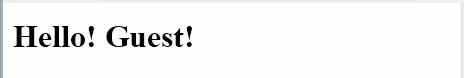
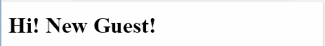
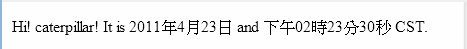

要使用JSTL的i18n相容格式標籤庫，必須在JSP網頁上使用taglib指示元素定義前置名稱與uri參考，慣例上使用i18n相容格式標籤庫時，會使用fmt作為前置名稱，JSTL 1.1格式標籤庫的uri參考則為http://java.sun.com/jsp/jstl/fmt。例如：
<%@taglib prefix="fmt" uri="http://java.sun.com/jsp/jstl/fmt"%>
首先來看到最基本的<fmt:bundle>、<fmt:message>如何使用，假設你準備了一個messages1.properties檔案如下：
cc.openhome.title=Welcome
cc.openhome.forGuest=Hello! Guest!
這個.properties檔案必須放在Web應用程式的/WEB-INF/classes中，接著如下建立JSP檔案：
<%@ page contentType="text/html; charset=UTF-8" pageEncoding="UTF-8"%>
<%@taglib prefix="fmt" uri="http://java.sun.com/jsp/jstl/fmt"%>
<!DOCTYPE html PUBLIC "-//W3C//DTD HTML 4.01 Transitional//EN"
"http://www.w3.org/TR/html4/loose.dtd">
<fmt:bundle basename="messages1">
<html>
<head>
<meta http-equiv="Content-Type"
content="text/html; charset=UTF-8">
<title><fmt:message key="cc.openhome.title" /></title>
</head>
<body>
<h1><fmt:message key="cc.openhome.forGuest" /></h1>
</body>
</html>
</fmt:bundle>
首先，使用taglib指示元素定義前置名稱與uri，然後使用<fmt:bundle>指定basename屬性為"messages1"，這表示預設的訊息檔案為messages1.properties，這邊先討論如何置換訊息檔案或其內容，國際化的問題稍後再討論，使用<fmt:message>的key屬性則指定訊息檔案中的哪條訊息。下圖為執行時的一個參考畫面：

如果你將<fmt:bundle>的basename改設定為"messages2"，並且另外準備一個messages2.properties：
cc.openhome.title=Aloha
cc.openhome.forGuest=Hi! New Guest!
那麼顯示出來的畫面中，訊息內容就是來自messages2.properties，如下圖所示：

你也可以使用<fmt:setBundle>標籤設置basename屬性，設置的效力預設是整個頁面都有作用，如果額外有<fmt:bundle>設置，則會以<fmt:bundle>的設置為主，例如：
<%@ page contentType="text/html; charset=UTF-8" pageEncoding="UTF-8"%>
<%@taglib prefix="fmt" uri="http://java.sun.com/jsp/jstl/fmt"%>
<!DOCTYPE html PUBLIC "-//W3C//DTD HTML 4.01 Transitional//EN"
"http://www.w3.org/TR/html4/loose.dtd">
<fmt:setBundle basename="messages1"/>
<html>
<head>
<meta http-equiv="Content-Type"
content="text/html; charset=UTF-8">
<title><fmt:message key="cc.openhome.title" /></title>
</head>
<body>
<h1><fmt:message key="cc.openhome.forGuest" /></h1>
<fmt:bundle basename="messages2">
<h1><fmt:message key="cc.openhome.forGuest" /></h1>
</fmt:bundle>
</body>
</html>
這個JSP一開始使用<fmt:setBundle>設置basename為"messages1"，所以第一個<fmt:message>取得的訊息就是來自messages1.properties，另一個被<fmt:bundle>包括的<fmt:message>，取得的訊息就是來自messages2.properties。
如果訊息中有些部份必須動態決定，則可以使用佔位字符先代替，例如：
cc.openhome.title=Hello
cc.openhome.forUser=Hi! {0}! It is {1, date, long} and {2, time ,full}.
在上面的訊息檔案中，粗體字部份就是佔位字符，號碼從0開始，分別代表第幾個佔位字符，在指定時可以指定型態與格式，所使用的格式是由java.text.MessageFormat所定義，可參考java.text.MessageFormat的API文件說明。
如果想設置佔位字符的真正內容，則是使用<fmt:param>標籤，例如：
<%@ page contentType="text/html; charset=UTF-8" pageEncoding="UTF-8"%>
<%@taglib prefix="fmt" uri="http://java.sun.com/jsp/jstl/fmt"%>
<jsp:useBean id="now" class="java.util.Date"/>
<!DOCTYPE html PUBLIC "-//W3C//DTD HTML 4.01 Transitional//EN"
"http://www.w3.org/TR/html4/loose.dtd">
<fmt:setBundle basename="messages3"/>
<html>
<head>
<meta http-equiv="Content-Type"
content="text/html; charset=UTF-8">
<title><fmt:message key="cc.openhome.title" /></title>
</head>
<body>
<fmt:message key="cc.openhome.forUser">
<fmt:param value="${param.username}"/>
<fmt:param value="${now}"/>
<fmt:param value="${now}"/>
</fmt:message>
</body>
</html>
在這個JSP中，使用<jsp:useBean>建立Date物件以取得目前系統時間，並設置為屬性，訊息檔案的基礎名稱設定為"messages3"，而訊息檔案中每個佔位字元，則使用<fmt:param>逐一設置，執行的結果畫面如下所示：

|